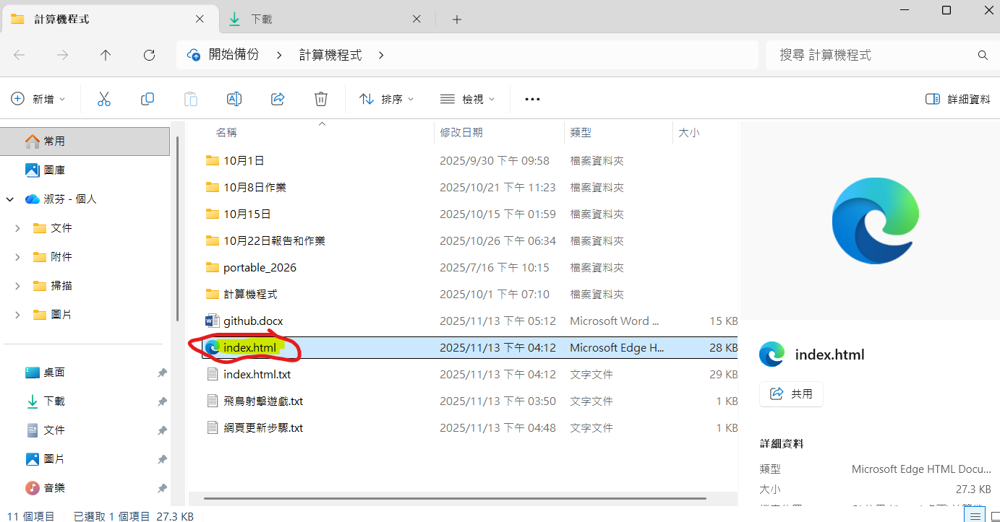

Next >> Reeborg
About
41423117、 41423120 、41423140
可攜程式套件:
portable_2026.7z (387MB)
解開壓縮後，雙點擊 start_miniconda3.bat 啟動可攜系統，雙點擊 stop.bat 關閉可攜系統。
可攜系統啟動後，在命令列執行 conda activate y:\envs\cmsimde 可進入能執行 CMSiMDE 的環境。
若希望可攜系統啟動直接進入 cmsimde 環境，可將 start_miniconda3.bat 檔案中第 98 行: call "%CONDA_ROOT%\Scripts\activate.bat" %ENV_NAME% 更換為 call "%CONDA_ROOT%\Scripts\activate.bat" %Disk%:\envs\cmsimde
更新網頁步驟:
使用 git status 檢查你的更改。
使用 git add . 指令將所有更改暫存起來。
使用 git commit -m "你的提交訊息" 指令將暫存的更改提交到本地儲存庫。

推送到遠端 GitHub 儲存庫：
使用 git push 指令將本地的更改推送到 GitHub 遠端儲存庫。推送完成後，GitHub Pages 會自動偵測到更改並重新構建你的網站。
w12 機器人程式編輯器:
https://s5.eng.nfu.edu.tw:9499/brython_test?load=222
1.🌍 MyWorld 類別的修改
世界尺寸擴大 :
原先 : MyWorld(width=10, height=10, sub_cell=5) 2222。
改後 : 為了容納 10 個數字，世界寬度被擴大為 width=15 3。
細格座標轉換修正 (sub_to_px) :
原先 : 採用了基於大格 (big_x, big_y) 和偏移量 (offset_x, offset_y) 的複雜轉換，並註明 BaseWorld 的 Y 軸是從下往上 4。
改後 : 採用了更簡潔且統一的細格座標轉換，直接將細格座標 sub_x 和 sub_y 轉換為像素座標。它通過 $py = (self.height \times self.sub\_cell - 1 - sub\_y) \times self.sub\_size + self.sub\_size // 2$ 的公式，將「Y 越大越往下」的 sub_y 座標系轉換為 BaseWorld 「Y 越大越往上」的像素 py 座標 5。
2. 🤖 MyRobot 類別的修改
初始化位置修正 (__init__) :
原先 : 機器人從大格 (start_big_x, start_big_y) 初始化，然後內部轉換為細格中心 6。
改後 : 機器人直接從細格座標 (start_sub_x, start_sub_y) 初始化，並將 super().__init__ 的大格座標設為 (0, 0)（因為細格移動會自行處理位置） 7。
移動轉向邏輯修正 (move_to) :
原先 : 轉向邏輯中，dy > 0 (Y 增大) 對應 target = "N" (北/上) 8。
改後 : 轉向邏輯根據新的「Y 越大越往下」的細格座標系進行了修正：
(1) dy > 0 (Y 增大，即往下) 對應 target = "S" (南/下) 9。
(2) dy < 0 (Y 減小，即往上) 對應 target = "N" (北/上) 10。
(3) 速度調整: 2.0 版本將 timer.set_timeout 的延遲從 40 毫秒減少到 10 毫秒。
3. 🔢 七段顯示器定義和繪製的修改
移除 PATHS (原先) 並新增 FLIPPED_PATHS (改後) :
原先 : 原始的 PATHS 已經是預先反轉 Y 軸 (Y=0 為頂部) 的版本 12。
改後 : 移除了 1.0 版本預先反轉的 PATHS，並新增了一個 FLIPPED_PATHS 字典 13。這個新的路徑是標準七段顯示器結構的 180 度上下翻轉版本 14。例如：原來的 A 段 (上) 變成了 D 段的位置 (下) 15。
繪製函數增強 (draw_digit) :
新增 : draw_digit 函數增加了一個 flipped=False 的參數。這允許程式選擇使用標準路徑還是 FLIPPED_PATHS 來繪製數字 16。
主程式繪製邏輯變更 :
原先 : 繪製 10 個數字，X 偏移量為 4 + i * 6 17。
改後 : 繪製 10 個數字，X 偏移量為 1 + i * 5 (每個數字寬度 4 格，間隔 1 格，總共 5 格) 18。
https://s5.eng.nfu.edu.tw:9499/brython_test?load=224
1. 🎨 結構化與參數化 (核心變更)
新增繪圖函數 draw_taiwan_flag :
原先：所有繪圖邏輯直接寫在主程式碼中，只能在固定位置繪製單面國旗 1。
改後：將整個國旗繪製過程封裝在一個函數 draw_taiwan_flag(ctx, x, y, w, h, rotation_degrees) 內 2。
優勢：這使得國旗的位置 (x, y)、尺寸 (w, h) 和旋轉角度 (rotation_degrees) 都可以作為參數傳入，實現程式碼的重用性和靈活性。
2. 🔄 旋轉功能的實現 (最重要的功能新增)
Canvas 座標轉換與旋轉 :
原先：程式碼中註釋掉了座標轉換，直接使用 Canvas 原始座標繪圖。
改後：在 draw_taiwan_flag 函數內部，利用 ctx.save(), ctx.translate(), ctx.rotate(), ctx.translate(), 和 ctx.restore() 這一組標準 Canvas API，實現了以國旗中心為原點的旋轉。
3. ✨ 白日光芒繪製邏輯的修正 (修正圖形細節)
新增內半徑 (使白日為十二角星) :
原先：白日部分僅使用單一半徑 (star_radius)，通過 24 次 moveTo/lineTo 繪製，實際繪製出來的是一個 12 邊形。
改後：新增了一個 inner_radius 變數 7。在 24 次迴圈中，它交替使用 star_radius (外半徑) 和 inner_radius (內半徑)，正確地繪製出十二角星 (Star of David-like shape) 8。
起始角度修正 :
原先：使用 angle = 0 開始，每次增加 $5 \times \frac{\pi \times 2}{12}$ 9。
改後：使用公式 (i * 15 - 90) * math.pi / 180 來計算角度，確保十二角星的第一個角是垂直向上的 (即 -90 度偏移，或 $-0.5\pi$ 弧度) 10。
4. 🖼️ 主程式碼的應用繪製多面國旗 :
原先：只繪製一個在固定位置的大國旗。
改後：主程式碼呼叫 draw_taiwan_flag 函數兩次 11：
(1) 繪製一個 90 度旋轉的國旗 12。
(2) 繪製一個 45 度旋轉的國旗 13。
同時，程式碼清理了 Canvas 畫布 (ctx.clearRect) 以準備繪製 14。
w13 📝 專案心得與學習總結
🎯 專案目標與核心任務 這個專案主要圍繞以下三個核心任務展開，展示了對 Reeborg 程式設計環境和基本控制邏輯的掌握：
1. 環境巡邏 (Patrol)：讓機器人以有規律的方式（例如水平蛇行或垂直巡邏）遍歷整個區域，確保路徑規劃的完整性和效率。
相關檔案：1. 水平巡邏.txt 、2. 上下垂直巡邏.txt 、2. 水平巡邏_走過每一個區域.txt
2. 田地採收 (Harvesting)：讓機器人沿著預定路徑移動，並在經過的每個格子中執行 take() 命令，採集所有物品（紅蘿蔔）。
相關檔案：1. 水平採收.txt 、2. 下垂直採收.txt
3. 環境標準化 (Normalization)：不僅是採集，還需要對特定區域內的格子進行整理，使每個格子最終只留下一個物品 (put())，體現了更複雜的邏輯判斷。
相關檔案：1. 採收與播種.txt
💡 學習到的程式設計概念
透過完成這些任務，主要學習並應用了以下程式設計和邏輯思維概念：
1. 基礎控制與自訂函數 (Custom Functions)
抽象化 (Abstraction)：頻繁使用 def turn_right(): 和 def turn_left(): 透過組合基本操作（如 turn_left()）來定義更複雜、更直觀的動作 (turn_right())，使主程式碼更具可讀性。
迴圈控制 (Loop Control)：大量使用 repeat n: 或 for i in range(n): 實現連續移動或連續轉彎，這是機器人程式設計中重複行為的基礎。
2. 導航與路徑規劃 (Navigation & Path Planning)
蛇行模式 (Zig-Zag Pattern)： 在水平巡邏（2. 水平巡邏_走過每一個區域.txt） 中，利用 y % 2 == 0 來判斷當前是偶數行 (向東) 還是奇數行 (向西) ，從而實現折返移動，避免走重複的路，這是遍歷整個網格的標準高效算法.
相對方向判斷：程式中包含複雜的轉向邏輯，例如：當機器人面向 E 時，需要 turn_around() 才能轉向 W；當面向 N 時，需要 turn_left() 才能轉向 W 。這訓練了從相對座標系思考導航問題的能力。
3. 條件判斷與狀態管理 (Conditionals & State)
環境感知 (Sensing)：使用 object_here() 判斷當前格子上是否有物品，並使用 is_facing_north() 判斷方向，這是在與環境互動時不可或缺的輸入。
複雜邏輯：在 1. 採收與播種.txt 中，normalize_one_cell() 函數首先利用 while object_here(): take() 來清空當前格子，然後再根據原本的計數 (count) 決定是否 put() 回一個物品 ，展示了讀取、處理、寫入的完整控制流程。
全局狀態：在 1. 水平採收.txt 中，使用 global object_taken 變數來追蹤已採集的總數量，並在達到目標 (object_taken >= 36) 時終止程式 (done = True) ，這是狀態機設計的雛形。
🚀 專業程式設計技巧
從 2. 水平巡邏_走過每一個區域.txt 的程式碼中，可以看出專案不僅限於 Reeborg 內建函數的使用，還深入到了網頁應用開發的層面，這是專案的進階亮點：
物件導向程式設計 (OOP)：定義了 World 和 AnimatedRobot 兩個類別，分別管理世界的渲染、牆壁、網格 以及機器人的狀態（位置、方向）和動畫行為 。
非同步編程 (Asynchronous Programming)：大量使用 async def 和 await asyncio.sleep(0.2) 處理機器人的移動和轉彎，這確保了動畫的流暢性和程式執行的非阻塞性，是現代遊戲或模擬器開發的關鍵技術。
DOM 操作與事件處理：程式碼涉及 js.document.createElement("canvas") 和 js.document.addEventListener('keydown', key_handler) 等，這表明這個專案能夠將 Python 程式碼與瀏覽器環境 (HTML/JavaScript) 進行深度整合，實現鍵盤和觸控按鈕對機器人的控制 。
結論 總體而言，這是一個全面且深入的 Reeborg 專案。它從基本的機器人控制和路徑規劃開始，逐步引入了蛇行算法、環境感知、狀態管理等核心邏輯，最終在進階檔案中展示了物件導向、非同步處理以及與網頁介面互動的能力。透過這個專案的實作，不僅掌握了 Reeborg 世界的操作，也為學習更複雜的自動化、遊戲開發或 Web 應用程式奠定了堅實的基礎。
w14 三個程式執行成功:
https://youtu.be/v_NxkFA5HxQ?si=-2jpIOsqMr2Ekmwc
Next >> Reeborg